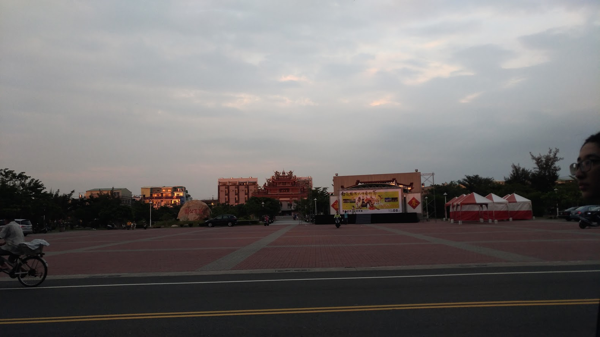

萬年殿、全銜為灣裡代天府萬年殿，創建於清雍正7年（1729年)，主
祀神：葉、朱、李三府千歲、還陪祀著傳說來自大陸已有三百年之久的王船；
陪祀神：五府千歲、佛祖、將軍爺、天上聖母、註生娘娘、福德正神土地公、
虎爺、中壇元帥等。萬年殿的沿革，其傳說頗多。
萬年殿創立約250年前，康熙年間追隨鄭成功戰役有功者蘇、葉、林
、黃、杜五姓，派來此地移住並獎勵其漁業及田野開墾。其後（約二百年
前）莊民出漁，見有神像乘一艘支那形船漂泊而來。此時，洽鄰莊莊民出
漁，雙方却時發現神船共同祭祀，而後相爭講和，神像歸喜樹，神船由廟
方來安置，而此神船即廟裡現存小型之神船，乾隆4年即增建地方來奉祀
神船。
廟構堂皇，巍峨壯麗，近年來在廟前闢有「萬年公園」，以及剛落
成不久位於廟後的「耕心園」，此二處今為灣裡居民平時常常駐足休憩的
場所。並在南側增建一棟四層樓之香客大樓、以行香客之便、以利行政之
用。

在民國53年(甲辰年11月17日)有劉石旺、鄭太平……等十位先生倡議祀神興鸞，公推楊河燐、
馬拋大往南投縣集集鎮明新書院崇德堂恭請文昌帝君前來本境奉祀，故暫以馬水定君之住宅
為善堂，並公選馬德臨為堂主，蒙聖賜堂號日「南府」，越二年，在民國55年(戊申年)，再
賜「二天府」堂號，顧其名乃集集之分堂，從此全銜曰「二天府明新書院崇德堂」。
主祀神明：
五文昌帝君:文昌梓潼帝君張浚、孔文昌帝君孔子、李文昌帝君李老道君、呂文昌帝君呂喦、關文昌帝君關羽。
陪祀神明：
紫微大帝、玄天上帝、保生大帝(三真人)、虎將軍、東嶽大帝，地藏王、福德正神、功德神、釋迦佛祖、文殊及普賢佛祖。
廟乃坐東向西，距離黃金海岸不到一公里，每當黃昏站立在三樓的玄關上欣賞晚霞，
確是一幅美景，這時海空一色，彩雲襯托著金黃色的餘暉、當太陽緩緩西沈，陸地西
濱公路車輛來來往往奔馳，賞景遊客成雙成對，絡繹不絕，這幅美景確實引人入勝而
心曠神怡， 宛如登仙境般令人流連忘返。
民國三十年(1941)降臨黃府，在日治昭和16年(公元1941年)歲次辛巳3月16日，
灣裡大廟萬年殿前的灣裡港仔，自外海漂來一艘長約1尺八寸(54.54公分)的小型王船，
沿途有發現者，皆不可得。當時灣裡派出所巡查聞訊趕來處理，即將王船砸毀；又另種
傳說，趕來處理的派出所巡查，將王船攜回派出所，撬開船板，發現裡面有米、香腳等
添載物品。船中雖無神明金身，惟載有「五府池府千歲」的字樣。松山里山仔後戶主黃
棟(1903-1966)原本出外於屏東行商賣魚，適逢休憩返家與妻兒相聚，因緣際會，隨即
起乩，成為台南四安境南廠保安宮五府千歲的乩身。黃府因祀奉「五府池府千歲」而事
業興隆，大顯神威，護佑鄉里，信眾日增，遂於民國三十五年(1946)，為感謝神恩，創
建本宮（當時為草寮）。
主祀神明：
五府池府千歲
陪祀神明：
老池王爺、一品元帥、註生娘娘、朱府三千歲、七娘媽、福德正神、觀世音菩薩、金姑娘
本廟宇為南式建築，燕尾脊，雕樑畫棟，結合國寶級匠師精緻作品，可號稱藝術殿堂，並不為過。
灣裡林氏
祖籍泉州府同安縣鼎尾鄉十八都積善里鴛湖保,明鄭時（大約1671年）來臺開基祖林公孝德率二弟東渡人臺（福爾摩沙群島）,居灣裡拓墾,其弟兩人分居半路竹、三甲,今為灣裡最大氏族,有宗廟,稱同安宮，在地稱之姓林王宮。
開基祖玄天上帝係祖佛由大陸恭迎來台，初期由族內輪流奉祀,民國初年始建茅草屋共同奉祀(據傳當初廟址原選在溪邊更上坡處，因牛車載磚石經現址，停止不前，遂更改於現址興建。)
民國十三年五府三千歲駐駕，由於神威顯赫，信眾頍眾,始於民國十六年由林姓宗族集議共同出資.向林賊先生購買土地以利建廟,而林賊先生樂善好施亦捐獻了部份土地,使廟更力廣闊,此為本宮之初建；民國四十八年第二次重建；民國六十八拆除舊廟至民國七十三年農曆正月中旬落成,第三代
重建。
現在廟貌是民國六十九年重建,七十三年完成。當時舊廟拆除時,前殿地面湧出泉水,請示玄天上帝、三千歲,結果指示湧出泉水處是重建前殿正中位置。神威顯赫、神恩廣澤、信徒頗眾。
主祀神明：
吳府千歲(南巡除妖驅邪，懇留供住草茅，玄天上帝願將大位禮讓) 玄天上帝
陪祀神明：
天上聖母、觀音佛祖、盧府千歲、五媽婆祖、註生娘娘、花公花婆、花童
前殿之門神像雕塑,前後殿之木構鑿井結 網繁複有序,雙邊牆壁交趾陶藝術，雕塑栩栩如生。
1.門神：畫稿蔡草如、木雕蘇海萍、潘義明彩繪，由許漢珍師傅總設計。
2.藻井：是國寶級許漢珍老師作品，唯一旋轉式藻井，表現建築藝術之美。
3.雙邊牆壁之交趾陶藝術：郭秋福（廟方）